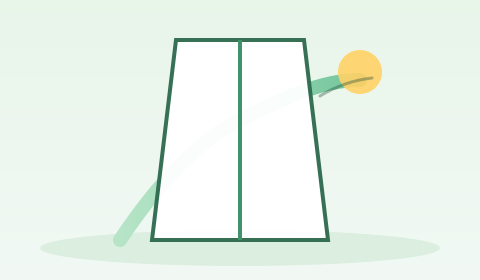

First week: reduce surprises
Use a tight checklist for cards, Wi‑Fi, email, and where to ask questions when something breaks.
Built for typical first-year tasks
This site gathers plain-language guidance around the jobs new students actually do: settle admin, find study rhythms, stay within official academic rules, and notice wellbeing early. Policies live on official HKU pages—we link out.
Disclaimer: this is an independent student companion site. It is not an official HKU publication. Always confirm deadlines and rules on your faculty site, Moodle, and HKU portals.

Use a tight checklist for cards, Wi‑Fi, email, and where to ask questions when something breaks.
Scanning beats re-reading. Pair HKU Libraries with honest time blocks and a simple weekly review.
Your course’s AI and collaboration rules come first. University-wide rules are linked for depth.